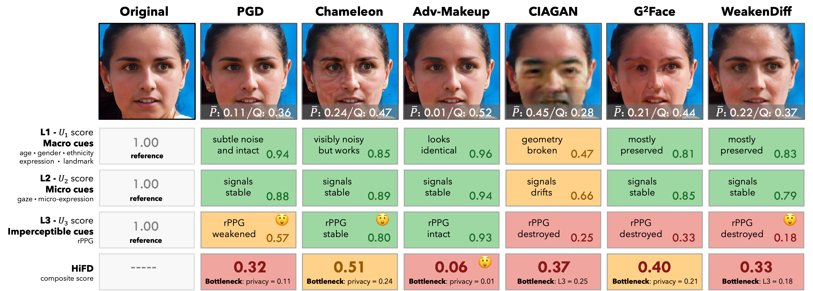
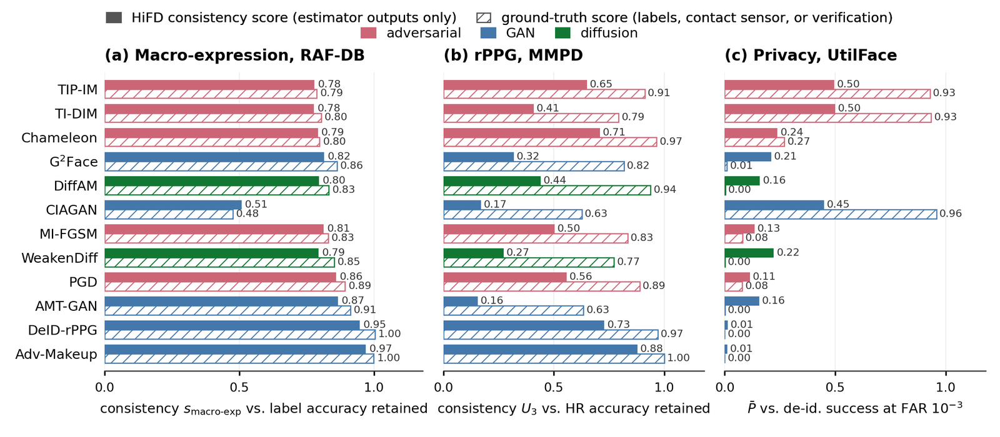

A hierarchical, consistency-based metric HiFD and a demographically balanced benchmark UtilFace for face de-identification.
1ELLIS Institute Finland, Finland·2Center for Machine Vision and Signal Analysis (CMVS), University of Oulu, Finland
NeurIPS 2026 · E&D Track

Face de-identification (FDeID) has emerged as a critical privacy-preserving technology, yet its evaluation remains fundamentally fragmented. Existing protocols rely on inconsistent metrics, heterogeneous datasets, and partial annotation coverage, so methods targeting different utility dimensions are reported on different benchmarks under different metrics, rendering cross-method comparison infeasible.
We revisit FDeID evaluation from both the data and metric perspectives. We introduce UtilFace, a curated, demographically balanced benchmark with high identity diversity, and propose HiFD, a hierarchical face de-identification metric that unifies identity suppression, multi-level utility preservation, and image quality under a single consistency-based paradigm. Using this unified protocol, we conduct a comprehensive comparative study spanning adversarial, GAN-based, and diffusion-based methods, surfacing trade-offs and failure modes that remain invisible under existing protocols.
How private is private? Under HiFD, the best of twelve methods reaches just 0.607 (95% CI 0.593–0.618); nine of twelve score below 0.30 on identity suppression, and only three de-identify more than 85% of faces from a modern recognizer ensemble at a false-accept rate of 10−2.
Twelve baselines from the paper, ranked under the selected profile. Click any row to reveal the per-axis breakdown (axes defined below in HiFD Metric). The ✓ badge marks entries reproduced by maintainers.
| # | Method | Paradigm | P̄ | Q | U₁ | U₂ | U₃ | HiFD | ✓ |
|---|---|---|---|---|---|---|---|---|---|
| Loading… or see the static snapshot if JS is disabled. | |||||||||
UtilFace is built from four large-scale face datasets through a four-stage curation pipeline: identity-aware cleaning, blind face restoration, NIQE-based perceptual filtering, and demographically stratified sampling at the identity level. The result is 99,928 images across 2,069 identities, with near-uniform gender balance (51.5 / 48.5%) and an ethnicity distribution flattened from a 53× to a 2.3× largest-to-smallest ratio. Because HiFD is consistency-based, UtilFace itself requires no attribute annotations.
| Stage | Operation | # Images | # Identities |
|---|---|---|---|
| 01 · Aggregation | Merge 4 source datasets | ~69.55M | ~3.12M |
| 02 · Cleaning & Enhance | Identity-aware filtering; GFPGAN / CodeFormer | ~20.58M | ~701,810 |
| 03 · Quality filter | NIQE < 5.0 | ~8.69M | ~640,035 |
| 04 · Balanced sampling | Hierarchical stratified sampling | 99,928 | 2,069 |
HiFD organizes facial signals into a three-level utility hierarchy, macro (L₁), micro (L₂), imperceptible (L₃), and integrates them with identity suppression (P̄) and image quality (Q) via a weighted harmonic mean:
Every component is a consistency score, the similarity between a pretrained estimator's outputs on the original face and its de-identified counterpart, so HiFD requires no per-image attribute annotations. The harmonic mean's vetoing property drives the score toward zero when any single dimension collapses, surfacing imbalanced methods that pass single-axis protocols.
A consistency-based metric stands or falls on whether estimator consistency tracks true utility. The following results answer it with dedicated experiments:
On the expression-labelled RAF-DB test split de-identified by all twelve methods, the per-image consistency score predicts whether the true label survives with AUC 0.98 over the 28,614 pairs whose original is classified correctly; across methods the consistency sub-score ranks methods as the labels do (Spearman 0.944). On MMPD, ranking by true heart-rate error from the contact sensor agrees with U₃ at Spearman 0.944.

@inproceedings{wei2026hifd,
title={How Private is Private? A Comparative Study for Face De-Identification},
author={Wei, Hui and Yu, Hao and Kuurila-Zhang, Hui and Zhao, Guoying},
booktitle={Advances in Neural Information Processing Systems},
year={2026}
}